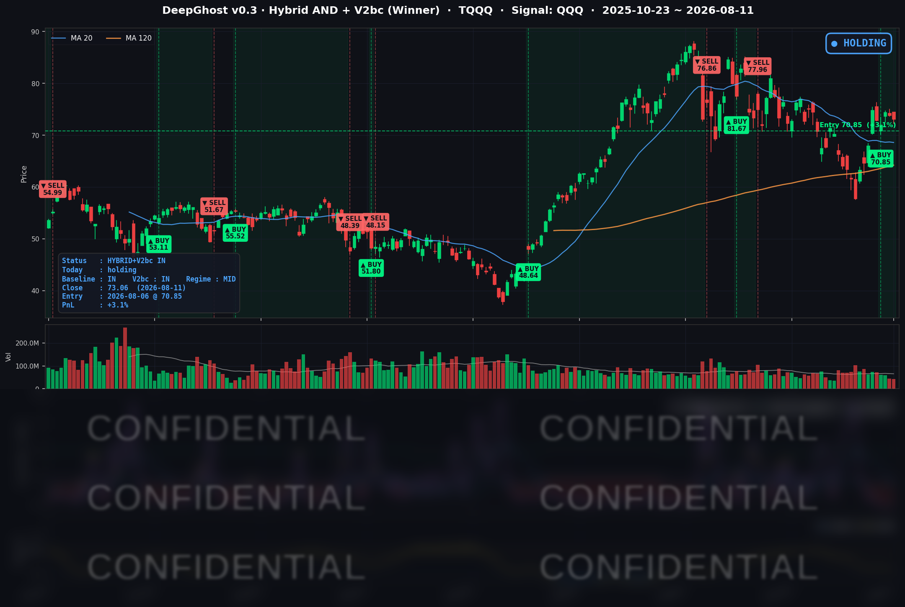

👻 매일 시그널과 히스토리를 홈페이지에서 한눈에 → www.ghostai.co.kr
7월 CPI 발표를 하루 앞두고 시장 전체가 관망세였습니다. 하지만 유가가 오늘도 올랐습니다. 트럼프의 타코가 나와야 맘 놓고 오를 수 있는 상황인 것 같습니다.
📊 오늘의 매매 신호
| 항목 | 내용 |
|---|---|
| 오늘 할 일 | ✅ 아무것도 안 해도 됩니다 |
| 포지션 상태 | 📈 TQQQ 보유 중 (IN POSITION) |
| 매수 진입일 | 2026-08-06 (5일째) |
| 진입가 → 현재가 | $70.85 → $73.06 |
| 현재 포지션 수익 | +3.1% |
TQQQ 시그널 — IN POSITION
현재 상태: 매수 포지션 유지 중 | 누적 수익률 +3.1%

나스닥이 -0.60% 조정을 받으면서 TQQQ도 당일 -1.00%로 소폭 되돌림이 나왔습니다. 전일 +4.16%였던 평가수익이 +3.12%로 줄었지만, 모델 관점에서 이번 하락은 '추세가 꺾인 것'이 아니라 '보유 중인 포지션 안에서의 되돌림'으로 읽힙니다. 청산을 고려할 국면과는 아직 거리가 있어, 전략은 매도 없이 보유를 이어갔습니다.
오늘 미국 시장 — 시황 요약
지수 마감
| 지수 | 종가 | 등락률 |
|---|---|---|
| S&P 500 | 7,728.20 | -0.32% |
| Nasdaq Composite | 26,445.45 | -0.60% |
| Dow Jones | 53,791.85 | -0.34% |
| Russell 2000 | 3,027.12 | +0.32% |
대형 기술주가 부진했던 반면 소형주는 강세를 보였습니다. 나스닥(-0.60%)이 S&P 500(-0.32%)과 소형주(러셀 +0.32%)를 밑돌면서, 대형 성장주에서 산업·소형·에너지로 자금이 미세하게 옮겨가는 로테이션 흐름이 나타났습니다.
국채 금리 동향
| 만기 | 수익률 | 전일 대비 |
|---|---|---|
| 3개월 | 3.730% | +1.2bp |
| 10년 | 4.684% | -1.5bp |
| 30년 | 5.236% | -0.7bp |
단기 금리는 소폭 오르고 장기 금리는 내려가는 '완만한 평탄화'가 나타났습니다. 10년물-3개월물 격차는 +95.4bp로 역전 없이 정상적인 우상향 커브를 유지했습니다. 장기 금리 하락은 통상 성장주에 우호적이지만, 이날은 유가 급등과 알파벳 개별 악재가 그 효과를 덮었습니다. 다만 10년물 4.68%, 30년물 5.24%라는 절대 레벨은 여전히 높아 고평가 기술주에는 부담으로 남아 있습니다.
연준 발언 & 금리 패스
CPI 발표를 하루 앞둔 관망 국면이라 이날 시장을 움직인 연준 위원 발언은 없었습니다. 배경 톤은 7월 29일 FOMC를 계승합니다. 당시 연준은 정책금리를 3.50-3.75%로 동결했지만, 위원 18명 중 9명이 연내 추가 인상 가능성을 시사하며 매파적 색채를 유지했습니다. 인하 사이클에 대한 기대는 후퇴하고 '추가 인상 카드'가 여전히 살아 있는 상황입니다.
오늘의 핵심 이슈
- 유가 급등 — 미국-이란 호르무즈 해협 협상이 교착되면서 유가가 크게 올랐습니다(WTI $83.51 +1.68%, Brent $89.23 +1.72%). 해협 통행량이 분쟁 전 수준 대비 급감하며 인플레이션과 기업 마진 부담 우려로 위험자산 심리를 눌렀습니다.
- 7월 CPI 발표 D-1 — 8월 12일 아침(미 동부시간)에 발표되는 7월 소비자물가가 최대 대기 이벤트입니다. 시장 예상은 헤드라인 +3.4% YoY, 코어 +2.5% YoY. 유가 충격이 반영되기 시작하는 첫 지표라 서프라이즈 민감도가 높습니다.
- 알파벳(GOOGL) 규제·차입 악재 — 프랑스 출판사들의 반경쟁 제소, EU 규제 압력, 250억 달러 규모 채권 발행, 핵심 인력 이탈 우려가 겹치며 -3.84%로 커버리지 최대 낙폭을 기록했습니다. 나스닥 부진의 주된 원인이었고, 규제 리스크는 애플(-1.09%)로도 번졌습니다.
변동성 & 투자심리
VIX는 15.28(-1.16%)로 20을 크게 밑도는 낮은 수준을 유지했습니다. 지수가 소폭 약세였음에도 옵션 시장에서는 큰 헤지 수요가 나타나지 않았습니다. CNN 공포·탐욕 지수는 64(Greed)로 낙관이 우위였습니다. 표면 지표는 여전히 밝지만, 유가·CPI·규제 리스크가 대형 기술주 차익실현을 유발한 '낙관 속 관망' 국면으로 요약됩니다.
매크로 & 원자재
유가와 금이 동반 강세를 보였습니다. WTI $83.51(+1.68%), Brent $89.23(+1.72%), 금 $4,434.10(+1.66%)로 지정학 헤지 수요가 뚜렷했습니다. 유가 급등이 내일 발표될 CPI를 자극할지, 아니면 안전자산 선호에 따른 장기 금리 하락이 우위를 지킬지가 시장 방향의 분수령이 될 전망입니다.
주요 종목 동향
| 종목 | 당일 종가 | 등락률 | 비고 |
|---|---|---|---|
| AAPL | 304.91 | -1.09% | 알파벳 규제 여파 연동, 하드웨어 약세 |
| NVDA | 217.50 | -0.02% | 보합. AI 투자 우려 속 방어 |
| MSFT | 503.81 | -0.44% | 소폭 약세. 극저변동 국면 |
| GOOGL | 343.80 | -3.84% | 커버리지 최대 낙폭. 규제·채권 발행·인력 이탈 |
| META | 599.12 | +0.71% | 커버리지 상위 강세 |
| AMZN | 272.27 | -2.09% | AI 투자 부담·광고 규제 심리 동조 약세 |
| TSLA | 332.81 | +0.58% | 강보합. 지수 약세 속 개별 강세 |
| NFLX | 74.79 | -1.97% | 전일 급등 후 되돌림 |
| AVGO | 416.08 | -1.50% | AI 커스텀 반도체 약세 |
| QCOM | 162.68 | +0.31% | 강보합 |
| INTC | 97.71 | +0.19% | 강보합 |
| MU | 868.52 | +0.87% | 커버리지 최고 상승. 메모리 강세 |
Ghost.AI — Quantitative AI Investment
Model: DeepGhost v0.3 | Transformer-Based Deep Learning
Coverage: 13 tickers | Updated every trading day after US market close
⚠️ 본 자료는 정보 제공 목적으로만 작성되었으며 투자 권유가 아닙니다. 모든 투자의 책임은 투자자 본인에게 있습니다. 과거 성과가 미래 수익을 보장하지 않습니다.
[유의사항]
- 본 서비스는 불특정 다수를 대상으로 발행되는 단방향 정보 제공 서비스이며, 투자자 개인의 재산 상황·투자 목적·위험 선호도를 반영한 개별 투자 조언이 아닙니다.
- 고스트에이아이 주식회사는 고객과 쌍방향 의사소통(개별 상담, 맞춤형 자문 등)을 제공하지 않습니다.
- 본 콘텐츠는 투자 권유 또는 매매 주문의 청약·청약의 권유에 해당하지 않으며, 최종 투자 판단 및 그에 따른 손익의 책임은 전적으로 투자자 본인에게 있습니다.
고스트에이아이 주식회사